import xarray as xr
import pandas as pd
import numpy as np
import matplotlib.pyplot as plt
from bluemath_tk.datamining.pca import PCA
from bluemath_tk.core.operations import spatial_gradient
from bluemath_tk.predictor.xwt import get_dynamic_estela_predictor
Load Data (Cyclone Model)#
#### Load Data ###
data_slp = xr.open_dataset('inputs/global_mslp_1day_1degree.nc')
data_slp["mslp"] = data_slp["mslp"] # Convert from Pa to hPa
data_slp["mslp_gradient"] = spatial_gradient(data_slp["mslp"])
data_slp_org = data_slp.copy()
data_slp_org
<xarray.Dataset> Size: 16GB
Dimensions: (time: 30642, latitude: 181, longitude: 360)
Coordinates:
* time (time) datetime64[ns] 245kB 1940-01-01 ... 2023-11-22
* latitude (latitude) float32 724B 89.62 88.62 87.62 ... -89.38 -90.0
* longitude (longitude) float32 1kB 0.375 1.375 2.375 ... 358.4 359.4
Data variables:
mslp (time, latitude, longitude) float32 8GB 1.041e+05 ... 9.99...
mslp_gradient (time, latitude, longitude) float32 8GB 0.0 0.0 ... 0.0 0.0data_slp.isel(time=0).mslp_gradient.plot()
<matplotlib.collections.QuadMesh at 0x7f04c5d6bf10>
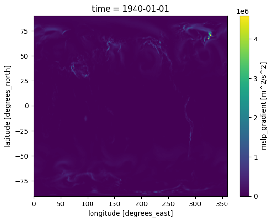
ESTELA#
estela = xr.open_dataset("inputs/estela_sea.nc", decode_times=False)
data_slp = get_dynamic_estela_predictor(data=data_slp, estela=estela)
data_slp = data_slp.isel(time=slice(30,None))
data_slp
<xarray.Dataset> Size: 16GB
Dimensions: (time: 30612, latitude: 181, longitude: 360)
Coordinates:
* time (time) datetime64[ns] 245kB 1940-01-31 ... 2023-11-22
* latitude (latitude) float32 724B 89.62 88.62 87.62 ... -89.38 -90.0
* longitude (longitude) float32 1kB 0.375 1.375 2.375 ... 358.4 359.4
Data variables:
mslp (time, latitude, longitude) float32 8GB nan nan ... nan nan
mslp_gradient (time, latitude, longitude) float32 8GB nan nan ... nan nandata_slp.isel(time=-1).mslp_gradient.plot()
<matplotlib.collections.QuadMesh at 0x7efb2bc4d050>
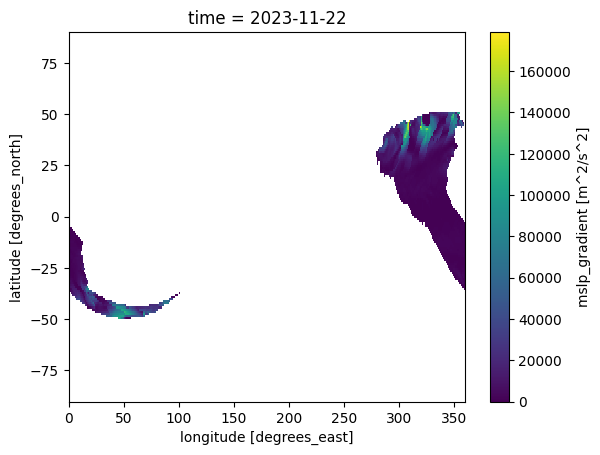
Principal Component Analysis - MSLP#
pca_mslp = PCA(n_components=0.95)
-------------------------------------------------------------------
| Initializing PCA reduction model with the following parameters:
| - n_components: 0.95
| - is_incremental: False
| For more information, please refer to the documentation.
-------------------------------------------------------------------
pca_mslp.fit_transform(data=data_slp, vars_to_stack=["mslp","mslp_gradient"], coords_to_stack=["latitude", "longitude"], pca_dim_for_rows="time")
2026-07-07 10:57:14,419 - PCA - WARNING - Using 4488 out of 65160 available variablesIf this is originated by using few times, please check 'nan_threshold_to_drop' parameter in fit method
2026-07-07 10:57:16,692 - PCA - WARNING - Using 4488 out of 65160 available variablesIf this is originated by using few times, please check 'nan_threshold_to_drop' parameter in fit method
<xarray.Dataset> Size: 52MB
Dimensions: (time: 30612, n_component: 422)
Coordinates:
* time (time) datetime64[ns] 245kB 1940-01-31 ... 2023-11-22
* n_component (n_component) int64 3kB 0 1 2 3 4 5 ... 416 417 418 419 420 421
Data variables:
PCs (time, n_component) float32 52MB -58.04 3.83 ... 0.6512 0.2074
stds (n_component) float32 2kB 36.85 28.32 20.2 ... 1.125 1.123(pca_mslp.is_fitted == True)
True
pca_mslp.save_model("outputs/PCA/pca_mslp_model.pkl")
pca_mslp.pcs_df.to_csv('outputs/PCA/pcs_mslp_df.csv')
pca_mslp.pcs.to_netcdf('outputs/PCA/pcs_mslp_ds.nc')
pca_mslp.eofs.to_netcdf('outputs/PCA/eofs_mslp.nc')
2026-07-07 10:59:49,636 - PCA - WARNING - Attribute pcs is an xarray Dataset / Dataarray and will be pickled!
Plot PCS#
pca_mslp.plot_pcs(num_pcs=10)
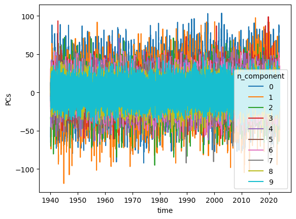
df = pca_mslp.pcs_df
import pandas as pd
import numpy as np
import statsmodels.api as sm
results = []
# numeric time variable
t = np.arange(len(df))
for col in df.columns:
y = df[col].values
X = sm.add_constant(t)
model = sm.OLS(y, X).fit()
results.append({
"column": col,
"slope": model.params[1],
"p_value": model.pvalues[1],
"r_squared": model.rsquared
})
trend_results = pd.DataFrame(results)
trend_results
| column | slope | p_value | r_squared | |
|---|---|---|---|---|
| 0 | PC1 | 1.956136e-04 | 2.183220e-16 | 0.002200 |
| 1 | PC2 | 2.554332e-04 | 2.468255e-44 | 0.006353 |
| 2 | PC3 | 7.410705e-06 | 5.705844e-01 | 0.000011 |
| 3 | PC4 | 2.177447e-04 | 3.350731e-96 | 0.014051 |
| 4 | PC5 | 1.841089e-04 | 1.033720e-71 | 0.010422 |
| ... | ... | ... | ... | ... |
| 417 | PC418 | 1.372693e-07 | 8.516061e-01 | 0.000001 |
| 418 | PC419 | -4.696142e-07 | 5.215870e-01 | 0.000013 |
| 419 | PC420 | 2.452486e-06 | 8.026989e-04 | 0.000367 |
| 420 | PC421 | -2.313931e-07 | 7.505216e-01 | 0.000003 |
| 421 | PC422 | 5.464039e-06 | 5.357269e-14 | 0.001847 |
422 rows × 4 columns
pca_mslp.plot_eofs(vars_to_plot=['mslp_gradient'],num_eofs=20, map_center=(-10, 10))
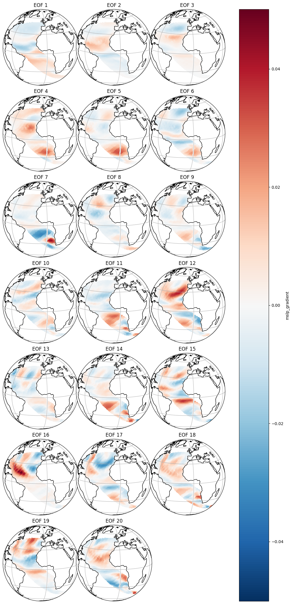
pcs_df = pca_mslp.pcs_df
pcs_df.index = pd.to_datetime(pcs_df.index, format='mixed')
waves_df = pd.read_csv('outputs/KMA/nearest_centroids_df_kma_sorted.csv', index_col=0, parse_dates=True)
waves_df.index = pd.to_datetime(waves_df.index, format='mixed')
start_dates = max(pcs_df.index.min(), waves_df.index.min())
end_dates = min(pcs_df.index.max(), waves_df.index.max())
pcs_df = pcs_df.loc[start_dates:end_dates]
waves_df = waves_df.loc[start_dates:end_dates]
waves_df
| dp0g1 | dp0g2 | dp0g3 | dp0g4 | dp1g1 | dp1g2 | dp1g3 | dp1g4 | hs0g1 | hs0g2 | ... | wd0g1 | wd0g2 | wd0g3 | wd0g4 | ws0g1 | ws0g2 | ws0g3 | ws0g4 | kma_bmus | kma_bmus_sorted | |
|---|---|---|---|---|---|---|---|---|---|---|---|---|---|---|---|---|---|---|---|---|---|
| 1980-01-01 | 28.782043 | 35.703796 | 39.281310 | 39.850890 | 89.152954 | 145.926850 | 189.337460 | 179.271970 | 0.382740 | 0.940579 | ... | 292.409572 | 304.735141 | 11.158457 | 20.563651 | 7.553808 | 4.869604 | 10.235694 | 10.320283 | 119 | 89 |
| 1980-01-02 | 318.195160 | 327.712280 | 9.877014 | 26.591430 | 214.929410 | 66.906340 | 103.681885 | 107.983340 | 1.050795 | 1.177428 | ... | 306.765543 | 303.416628 | 327.942107 | 334.855340 | 10.016481 | 7.349875 | 11.601874 | 10.773316 | 79 | 80 |
| 1980-01-03 | 354.997560 | 331.300230 | 316.541230 | 311.173770 | 72.304110 | 64.333496 | 50.085205 | 53.043365 | 0.283832 | 0.267952 | ... | 357.441789 | 357.291148 | 334.044467 | 349.017279 | 3.773770 | 4.107564 | 5.699790 | 5.420217 | 76 | 33 |
| 1980-01-04 | 41.288820 | 52.395294 | 89.286470 | 45.602356 | 61.830690 | 72.263000 | 56.727110 | 62.108154 | 0.145059 | 0.202360 | ... | 88.889658 | 67.234282 | 106.936122 | 53.808682 | 4.027967 | 4.898098 | 6.704189 | 6.837090 | 77 | 70 |
| 1980-01-05 | 302.820700 | 302.940500 | 309.122650 | 45.685272 | 177.106380 | 174.610840 | 54.831420 | 160.388850 | 1.256407 | 1.236957 | ... | 310.266064 | 312.039953 | 303.962826 | 330.388824 | 10.537236 | 8.628696 | 11.271146 | 10.397302 | 47 | 16 |
| ... | ... | ... | ... | ... | ... | ... | ... | ... | ... | ... | ... | ... | ... | ... | ... | ... | ... | ... | ... | ... | ... |
| 2023-11-18 | 357.108520 | 39.359100 | 348.023320 | 341.370880 | 140.253420 | 140.336300 | 158.202030 | 155.510680 | 0.027800 | 0.108290 | ... | 22.928495 | 5.375379 | 20.855045 | 6.413815 | 8.727995 | 4.604550 | 8.252207 | 5.218633 | 113 | 81 |
| 2023-11-19 | 74.404270 | 62.520570 | 18.869354 | 10.800995 | 122.369230 | 119.702120 | 126.582490 | 126.635680 | 1.501517 | 1.598826 | ... | 43.527083 | 42.248412 | 19.511140 | 12.730200 | 8.618773 | 6.367436 | 9.782240 | 8.976334 | 109 | 75 |
| 2023-11-20 | 64.489380 | 63.182740 | 32.470123 | 30.923737 | 107.767240 | 113.497650 | 113.105530 | 114.981750 | 0.808519 | 1.141583 | ... | 64.847804 | 52.436675 | 56.364010 | 28.609255 | 6.441152 | 6.585081 | 7.399501 | 7.477255 | 109 | 75 |
| 2023-11-21 | 115.983340 | 123.777710 | 88.835690 | 67.987946 | 48.719696 | 83.386720 | 73.467224 | 91.405270 | 2.269762 | 2.047011 | ... | 139.203379 | 135.983564 | 121.538567 | 103.371000 | 11.575684 | 8.148464 | 10.589594 | 8.224907 | 130 | 38 |
| 2023-11-22 | 168.160890 | 168.411800 | 169.146480 | 135.706050 | 192.791660 | 192.263960 | 124.592620 | 141.037050 | 2.459077 | 2.606657 | ... | 218.648139 | 223.891559 | 205.345203 | 200.193406 | 13.864354 | 9.653502 | 14.070454 | 10.940391 | 87 | 8 |
16032 rows × 34 columns
waves_df['energy'] = waves_df['hs1g4']**2 * waves_df['tp1g4']
from sklearn.linear_model import LinearRegression
X = pcs_df.values
y = waves_df['energy'].values
model = LinearRegression()
model.fit(X, y)
y_pred = model.predict(X)
fig, ax = plt.subplots(1,1, figsize=(10,10))
ax.plot([0,1500],[0,1500], color='black', lw=2)
ax.scatter(y,y_pred)
ax.set_aspect('equal')
ax.set_xlabel('True Energy')
ax.set_ylabel('Predicted Energy')
ax.set_title('Energy Predictions')
ax.set_ylim(0,200)
ax.set_xlim(0,200)
plt.show()
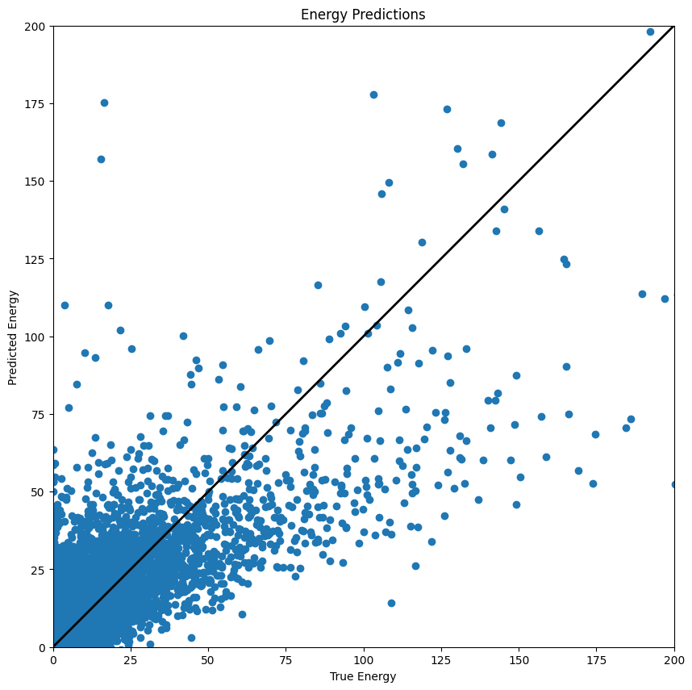
LONG TERM PCs MSLP (20CR)#
mslp_20cr = xr.open_dataset("inputs/20CR/NC_20CR_prmsl_daily.nc")
mslp_20cr = mslp_20cr.rename({"lon": "longitude", "lat": "latitude", "prmsl": "mslp"})
mslp_20cr["mslp_gradient"] = spatial_gradient(mslp_20cr["mslp"])
mslp_20cr
<xarray.Dataset> Size: 6GB
Dimensions: (time: 51865, latitude: 81, longitude: 180)
Coordinates:
* time (time) datetime64[ns] 415kB 1871-01-01 ... 2012-12-31
* latitude (latitude) float32 324B 80.0 78.0 76.0 ... -76.0 -78.0 -80.0
* longitude (longitude) float32 720B 0.0 2.0 4.0 ... 354.0 356.0 358.0
Data variables:
mslp (time, latitude, longitude) float32 3GB 1.015e+05 ... 9.92...
mslp_gradient (time, latitude, longitude) float32 3GB 0.0 0.0 ... 0.0 0.0
Attributes:
Conventions: CF-1.2
title: 4x Daily NOAA-CIRES 20th Century Reanalysis
comments: Data is from \nNOAA-CIRES 20th Century Reanalysis version...
platform: Model
institution: NOAA ESRL/PSD
citation: Compo,G.P. <http://www.esrl.noaa.gov/psd/people/gilbert.p...
version: 2.0
history: created 2010/05 by Hoop (netCDF4)\nConverted to chunked, ...
dataset_title: NOAA-CIRES 20th Century Reanalysis (V2)
References: http://www.psl.noaa.gov/data/gridded/data.20thCentReanaly...# target grid from your SLP data
target_lat = data_slp_org.latitude.values
target_lon = data_slp_org.longitude.values
# normalize longitude convention to match target (0..360 vs -180..180)
if mslp_20cr.longitude.min() < 0:
mslp_20cr = mslp_20cr.assign_coords(
longitude=((mslp_20cr.longitude + 360) % 360)
).sortby("longitude")
# bilinear-like interpolation in xarray
mslp_20cr_rg = mslp_20cr.interp(
latitude=target_lat,
longitude=target_lon,
method="linear"
)
mslp_20cr_rg
<xarray.Dataset> Size: 27GB
Dimensions: (time: 51865, latitude: 181, longitude: 360)
Coordinates:
* time (time) datetime64[ns] 415kB 1871-01-01 ... 2012-12-31
* latitude (latitude) float32 724B 89.62 88.62 87.62 ... -89.38 -90.0
* longitude (longitude) float32 1kB 0.375 1.375 2.375 ... 358.4 359.4
Data variables:
mslp (time, latitude, longitude) float32 14GB nan nan ... nan nan
mslp_gradient (time, latitude, longitude) float32 14GB nan nan ... nan nan
Attributes:
Conventions: CF-1.2
title: 4x Daily NOAA-CIRES 20th Century Reanalysis
comments: Data is from \nNOAA-CIRES 20th Century Reanalysis version...
platform: Model
institution: NOAA ESRL/PSD
citation: Compo,G.P. <http://www.esrl.noaa.gov/psd/people/gilbert.p...
version: 2.0
history: created 2010/05 by Hoop (netCDF4)\nConverted to chunked, ...
dataset_title: NOAA-CIRES 20th Century Reanalysis (V2)
References: http://www.psl.noaa.gov/data/gridded/data.20thCentReanaly...import pickle
pca_mslp_fit = pickle.load(open("outputs/PCA/pca_mslp_model.pkl", "rb"))
PCs 20CR data#
# 2) Apply SAME ESTELA dynamic predictor/mask used for PCA fit
mslp_20cr_estela = get_dynamic_estela_predictor(data=mslp_20cr_rg, estela=estela)
mslp_20cr_estela
<xarray.Dataset> Size: 27GB
Dimensions: (time: 51865, latitude: 181, longitude: 360)
Coordinates:
* time (time) datetime64[ns] 415kB 1871-01-01 ... 2012-12-31
* latitude (latitude) float32 724B 89.62 88.62 87.62 ... -89.38 -90.0
* longitude (longitude) float32 1kB 0.375 1.375 2.375 ... 358.4 359.4
Data variables:
mslp (time, latitude, longitude) float32 14GB nan nan ... nan nan
mslp_gradient (time, latitude, longitude) float32 14GB nan nan ... nan nan
Attributes:
Conventions: CF-1.2
title: 4x Daily NOAA-CIRES 20th Century Reanalysis
comments: Data is from \nNOAA-CIRES 20th Century Reanalysis version...
platform: Model
institution: NOAA ESRL/PSD
citation: Compo,G.P. <http://www.esrl.noaa.gov/psd/people/gilbert.p...
version: 2.0
history: created 2010/05 by Hoop (netCDF4)\nConverted to chunked, ...
dataset_title: NOAA-CIRES 20th Century Reanalysis (V2)
References: http://www.psl.noaa.gov/data/gridded/data.20thCentReanaly...
# 3) (optional but recommended) align mean/std to training reference
ref = data_slp # IMPORTANT: use data_slp
mslp_20cr_std = mslp_20cr_estela.copy()
for v in ["mslp", "mslp_gradient"]:
ref_mean = ref[v].mean(dim="time", skipna=True)
ref_std = ref[v].std(dim="time", skipna=True)
src_mean = mslp_20cr_std[v].mean(dim="time", skipna=True)
src_std = mslp_20cr_std[v].std(dim="time", skipna=True)
mslp_20cr_std[v] = ((mslp_20cr_std[v] - src_mean) / xr.where(src_std == 0, np.nan, src_std)) \
* xr.where(ref_std == 0, np.nan, ref_std) + ref_mean
mslp_20cr_std[v] = mslp_20cr_std[v].fillna(ref_mean)
v = pca_mslp_fit.vars_to_stack[0]
fit_valid = (data_slp[v].notnull().mean("time") > 0.90)
new_valid = (mslp_20cr_std[v].notnull().mean("time") > 0.90)
print("fit valid points:", int(fit_valid.sum()))
print("new valid points:", int(new_valid.sum()))
print("missing vs fit:", int((fit_valid & ~new_valid).sum()))
print("extra vs fit:", int((~fit_valid & new_valid).sum()))
print("scaler expects:", pca_mslp_fit.scaler.n_features_in_)
fit valid points: 4488
new valid points: 4488
missing vs fit: 0
extra vs fit: 0
scaler expects: 8976
# 4) Transform
PCs_f = pca_mslp_fit.transform(mslp_20cr_std)
2026-07-07 11:15:50,551 - PCA - WARNING - Using 4488 out of 65160 available variablesIf this is originated by using few times, please check 'nan_threshold_to_drop' parameter in fit method
2026-07-07 11:15:54,427 - PCA - WARNING - Using 4488 out of 65160 available variablesIf this is originated by using few times, please check 'nan_threshold_to_drop' parameter in fit method
# PCs_f = pca_mslp_fit.transform(mslp_20cr_rg)
df_pcs = pd.DataFrame(
data=PCs_f.PCs.astype(np.float32),
columns=[f"PC{i + 1}" for i in PCs_f.n_component.values],
index=PCs_f.time.values,
)
display(df_pcs.head())
| PC1 | PC2 | PC3 | PC4 | PC5 | PC6 | PC7 | PC8 | PC9 | PC10 | ... | PC413 | PC414 | PC415 | PC416 | PC417 | PC418 | PC419 | PC420 | PC421 | PC422 | |
|---|---|---|---|---|---|---|---|---|---|---|---|---|---|---|---|---|---|---|---|---|---|
| 1871-01-01 | -0.086007 | -0.234905 | -0.183891 | 0.118256 | -0.307796 | 0.629457 | -0.260849 | -0.348632 | -0.315842 | -0.386926 | ... | -0.399517 | -0.006635 | -0.043550 | 0.027324 | 0.186573 | 0.074457 | 0.021749 | -0.106527 | 0.085744 | -0.341209 |
| 1871-01-02 | -0.187273 | -0.618195 | -0.469747 | 0.505611 | -0.959331 | 1.398849 | -0.707023 | -0.849267 | -0.867767 | -0.870079 | ... | -0.043545 | -0.199837 | 0.003420 | -0.023368 | 0.050978 | 0.022223 | -0.117842 | -0.236173 | -0.004014 | -0.134645 |
| 1871-01-03 | -0.171758 | -2.394401 | -0.311508 | 1.524742 | -2.522201 | 2.343110 | -1.141847 | -2.595708 | -2.169162 | 0.049443 | ... | -0.635301 | -0.317808 | -0.595697 | 0.044560 | -0.121341 | -0.211656 | -0.097481 | 0.455737 | 0.462362 | -0.026479 |
| 1871-01-04 | 0.260252 | -7.954070 | 1.481841 | 4.327903 | -7.002630 | 4.265431 | -1.930586 | -7.968569 | -5.875587 | 4.224694 | ... | -0.325275 | 0.659490 | 0.809547 | 0.109262 | 0.286208 | -0.067150 | -0.315534 | -0.279543 | -0.457101 | -0.308599 |
| 1871-01-05 | 1.236674 | -14.232229 | 6.509466 | 6.962477 | -11.092649 | 3.279446 | -1.090120 | -12.042172 | -8.256926 | 11.648436 | ... | 0.681365 | -0.732861 | -0.776753 | -0.600548 | -0.804398 | -0.543199 | 0.908270 | -0.782035 | -0.176883 | 1.274076 |
5 rows × 422 columns
df = df_pcs
results = []
# numeric time variable
t = np.arange(len(df))
for col in df.columns:
y = df[col].values
X = sm.add_constant(t)
model = sm.OLS(y, X).fit()
results.append({
"column": col,
"slope": model.params[1],
"p_value": model.pvalues[1],
"r_squared": model.rsquared
})
trend_results = pd.DataFrame(results)
trend_results
| column | slope | p_value | r_squared | |
|---|---|---|---|---|
| 0 | PC1 | 0.000108 | 6.187435e-25 | 0.002048 |
| 1 | PC2 | 0.000143 | 1.772788e-76 | 0.006583 |
| 2 | PC3 | -0.000031 | 1.558898e-07 | 0.000530 |
| 3 | PC4 | 0.000040 | 1.081412e-18 | 0.001501 |
| 4 | PC5 | 0.000157 | 3.098937e-265 | 0.023071 |
| ... | ... | ... | ... | ... |
| 417 | PC418 | -0.000005 | 5.626452e-68 | 0.005835 |
| 418 | PC419 | 0.000001 | 2.804665e-04 | 0.000254 |
| 419 | PC420 | 0.000002 | 3.298387e-14 | 0.001109 |
| 420 | PC421 | -0.000004 | 1.814452e-39 | 0.003326 |
| 421 | PC422 | 0.000002 | 3.068278e-07 | 0.000505 |
422 rows × 4 columns
# Plot each PC and its linear trend in one figure (1 column x 11 rows)
import matplotlib.pyplot as plt
import numpy as np
# Use the first 11 PCs
pc_cols = list(df.columns[:11])
t = np.arange(len(df))
fig, axes = plt.subplots(nrows=11, ncols=1, figsize=(14, 24), sharex=True, constrained_layout=True)
for i, col in enumerate(pc_cols):
y = df[col].values
slope, intercept = np.polyfit(t, y, 1)
y_trend = slope * t + intercept
axes[i].plot(df.index, y, color="black", lw=0.8, label=f"{col}")
axes[i].plot(df.index, y_trend, color="fuchsia", lw=1.6, label=f"trend (slope={slope:.2e})")
axes[i].axhline(0, color="gray", lw=0.5)
axes[i].set_ylabel(col)
axes[i].legend(loc="upper right", fontsize=8)
axes[-1].set_xlabel("Time")
fig.suptitle("PC1-PC11 and linear trends", y=1.005)
plt.show()
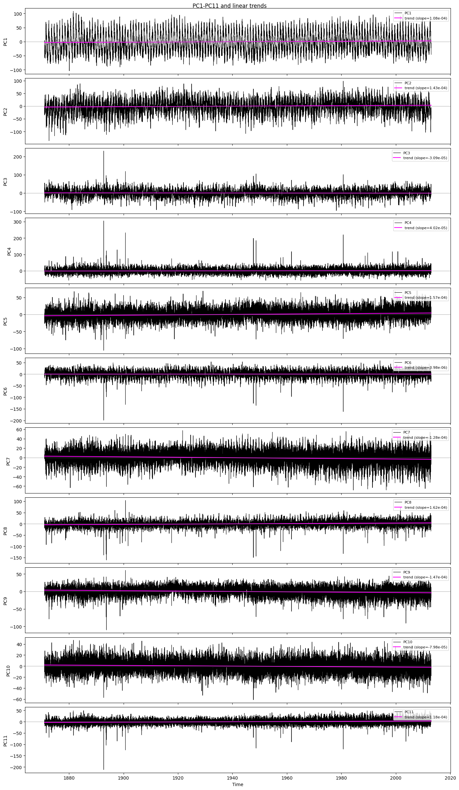
frequency = "daily"
import cartopy.crs as ccrs
import cartopy.feature as cfeature
def to_freq(ds: xr.Dataset, freq: str) -> xr.Dataset:
if freq == "daily":
return ds
return ds.resample(time="MS").mean()
def grad_mag(da: xr.DataArray) -> xr.DataArray:
dlat = float(np.abs(da.latitude[1] - da.latitude[0]))
dlon = float(np.abs(da.longitude[1] - da.longitude[0]))
gy, gx = np.gradient(da.values, dlat, dlon) # d/dlat, d/dlon
return xr.DataArray(
np.sqrt(gx**2 + gy**2),
coords={"latitude": da.latitude, "longitude": da.longitude},
dims=("latitude", "longitude"),
)
# --- Load BASE + NEW (daily, MSLP only) ---
base = data_slp
new = mslp_20cr_std
# Ensure we are working with xarray objects (your run can sometimes hold pandas DataFrames)
import pandas as pd
def ensure_xarray(obj: object) -> xr.Dataset:
if isinstance(obj, xr.Dataset):
return obj
if isinstance(obj, pd.DataFrame):
df = obj
# If time/lat/lon are columns, create a MultiIndex.
if {"time", "latitude", "longitude"}.issubset(df.columns):
df = df.set_index(["time", "latitude", "longitude"])
if isinstance(df.index, pd.MultiIndex):
# If names are missing/unknown, assume (time, latitude, longitude) order.
if list(df.index.names) != ["time", "latitude", "longitude"]:
df = df.copy()
df.index = df.index.set_names(["time", "latitude", "longitude"])
return xr.Dataset.from_dataframe(df)
raise ValueError("DataFrame must include (time, latitude, longitude) to convert to xarray")
return obj
base = ensure_xarray(base)
new = ensure_xarray(new)
# Keep only vars available in both
vars_to_plot = ["mslp"]
# Align period
t0 = max(base.time.values.min(), new.time.values.min())
t1 = min(base.time.values.max(), new.time.values.max())
base = base.sel(time=slice(t0, t1))
new = new.sel(time=slice(t0, t1))
# Align grid
base = base.interp(latitude=new.latitude, longitude=new.longitude, method="nearest")
# Build means + gradients
mean_base = {v: base[v].mean("time") for v in vars_to_plot}
mean_new = {v: new[v].mean("time") for v in vars_to_plot}
grad_base = {v: grad_mag(mean_base[v]) for v in vars_to_plot}
grad_new = {v: grad_mag(mean_new[v]) for v in vars_to_plot}
# Put USA on the left side of map (adjust as needed)
map_center_lon = 10
map_crs = ccrs.PlateCarree(central_longitude=map_center_lon)
data_crs = ccrs.PlateCarree()
lat_min = float(new.latitude.min())
lat_max = float(new.latitude.max())
lon_min = float(new.longitude.min())
lon_max = float(new.longitude.max())
# Dynamic layout: 2 rows per variable (mean + gradient), 2 columns (base vs new)
nvars = len(vars_to_plot)
fig, axes = plt.subplots(
2 * nvars,
2,
figsize=(14, 4.5 * 2 * nvars),
constrained_layout=True,
subplot_kw={"projection": map_crs},
)
axes = np.atleast_2d(axes)
for iv, v in enumerate(vars_to_plot):
r_mean = 2 * iv
r_grad = r_mean + 1
# Mean maps
vmin = np.nanmin([mean_base[v].values, mean_new[v].values])
vmax = np.nanmax([mean_base[v].values, mean_new[v].values])
im = axes[r_mean, 0].pcolormesh(
mean_base[v].longitude,
mean_base[v].latitude,
mean_base[v],
transform=data_crs,
shading="auto",
cmap="RdBu_r",
vmin=vmin,
vmax=vmax,
)
axes[r_mean, 0].set_title(f"Mean {v.upper()} - BASE ({frequency})")
fig.colorbar(im, ax=axes[r_mean, 0], label=v)
im = axes[r_mean, 1].pcolormesh(
mean_new[v].longitude,
mean_new[v].latitude,
mean_new[v],
transform=data_crs,
shading="auto",
cmap="RdBu_r",
vmin=vmin,
vmax=vmax,
)
axes[r_mean, 1].set_title(f"Mean {v.upper()} - 20CR ({frequency})")
fig.colorbar(im, ax=axes[r_mean, 1], label=v)
# Gradient maps
gmin = 0.0
gmax = np.nanmax([grad_base[v].values, grad_new[v].values])
im = axes[r_grad, 0].pcolormesh(
grad_base[v].longitude,
grad_base[v].latitude,
grad_base[v],
transform=data_crs,
shading="auto",
cmap="viridis",
vmin=gmin,
vmax=gmax,
)
axes[r_grad, 0].set_title(f"{v.upper()} Gradient - BASE ({frequency})")
fig.colorbar(im, ax=axes[r_grad, 0], label=f"|grad {v}|")
im = axes[r_grad, 1].pcolormesh(
grad_new[v].longitude,
grad_new[v].latitude,
grad_new[v],
transform=data_crs,
shading="auto",
cmap="viridis",
vmin=gmin,
vmax=gmax,
)
axes[r_grad, 1].set_title(f"{v.upper()} Gradient - 20CR ({frequency})")
fig.colorbar(im, ax=axes[r_grad, 1], label=f"|grad {v}|")
for ax in axes.ravel():
ax.set_extent([lon_min, lon_max, lat_min, lat_max], crs=data_crs)
ax.add_feature(cfeature.COASTLINE, linewidth=0.6)
ax.add_feature(cfeature.BORDERS, linewidth=0.4)
ax.set_xlabel("longitude")
ax.set_ylabel("latitude")
plt.show()
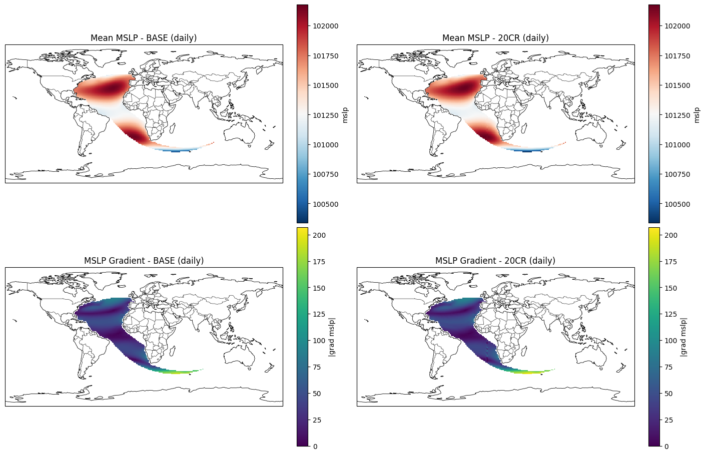
# Ensure we are working with xarray objects
def ensure_xarray(obj: object) -> xr.Dataset:
if isinstance(obj, xr.Dataset):
return obj
if isinstance(obj, pd.DataFrame):
df = obj
if {"time", "latitude", "longitude"}.issubset(df.columns):
df = df.set_index(["time", "latitude", "longitude"])
if isinstance(df.index, pd.MultiIndex):
if list(df.index.names) != ["time", "latitude", "longitude"]:
df = df.copy()
df.index = df.index.set_names(["time", "latitude", "longitude"])
return xr.Dataset.from_dataframe(df)
raise ValueError("DataFrame must include (time, latitude, longitude) to convert to xarray")
raise TypeError("Expected xarray.Dataset or a convertible pandas.DataFrame")
base = ensure_xarray(data_slp)
new = ensure_xarray(mslp_20cr_std)
# Align common time window
# (daily data: we just slice both to their overlap)
t0 = max(base.time.values.min(), new.time.values.min())
t1 = min(base.time.values.max(), new.time.values.max())
base = base.sel(time=slice(t0, t1))
new = new.sel(time=slice(t0, t1))
# Align grid (interpolate BASE to 20CR grid if needed)
base = base.interp(latitude=new.latitude, longitude=new.longitude, method="nearest")
v = "mslp"
# Seasons (climatological; DJF uses Dec/Jan/Feb)
seasons = {
"DJF": [12, 1, 2],
"MAM": [3, 4, 5],
"JJA": [6, 7, 8],
"SON": [9, 10, 11],
}
def season_mean(da: xr.DataArray, months: list[int]) -> xr.DataArray:
m = da["time"].dt.month
mask = None
for mo in months:
mask = (m == mo) if mask is None else (mask | (m == mo))
return da.where(mask, drop=True).mean("time")
fig, axes = plt.subplots(
len(seasons),
2,
figsize=(14, 4.0 * len(seasons)),
constrained_layout=True,
)
axes = np.atleast_2d(axes)
for i, (season_name, months) in enumerate(seasons.items()):
mean_base = season_mean(base[v], months)
mean_new = season_mean(new[v], months)
vmin = np.nanmin([mean_base.values, mean_new.values])
vmax = np.nanmax([mean_base.values, mean_new.values])
im = axes[i, 0].pcolormesh(
mean_base.longitude,
mean_base.latitude,
mean_base,
shading="auto",
cmap="RdBu_r",
vmin=vmin,
vmax=vmax,
)
axes[i, 0].set_title(f"{season_name} mean MSLP - BASE")
fig.colorbar(im, ax=axes[i, 0], label=v)
im = axes[i, 1].pcolormesh(
mean_new.longitude,
mean_new.latitude,
mean_new,
shading="auto",
cmap="RdBu_r",
vmin=vmin,
vmax=vmax,
)
axes[i, 1].set_title(f"{season_name} mean MSLP - 20CR")
fig.colorbar(im, ax=axes[i, 1], label=v)
for ax in axes.ravel():
ax.set_xlabel("longitude")
ax.set_ylabel("latitude")
plt.show()
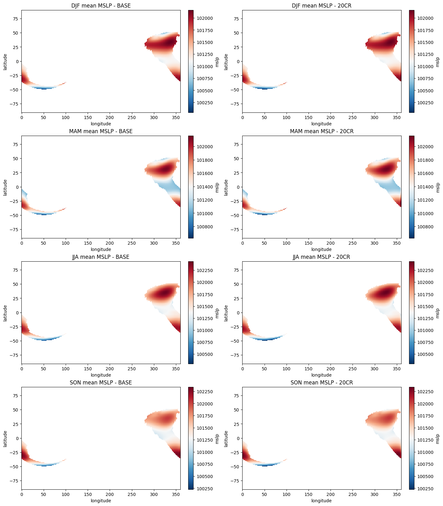
from utils.Pcs_plots import plot_pc_pair_scatters
from utils.Pcs_plots import plot_pc_histograms
from utils.Pcs_plots import plot_pc_time_series
plot_pc_pair_scatters(
pca_fit=pca_mslp_fit,
df_new=df_pcs,
pairs=[(1, 2), (2, 3), (3, 4), (4, 5), (5, 6), (6, 7), (7, 8), (8, 9), (9, 10), (10, 1)],
npcs=10,
labels=("fit", "new"),
)
plot_pc_histograms(
pca_fit=pca_mslp_fit,
df_new=df_pcs,
npcs=10,
ncols=6,
bins=60,
labels=("Original_data", "Fitted 20CR"),
)
plot_pc_time_series(
pca_fit=pca_mslp_fit,
df_new=df_pcs,
npcs=10,
ncols=5,
nrows=2,
figsize=(22, 6),
labels=("Original data", "Fitted 20CR"),
)
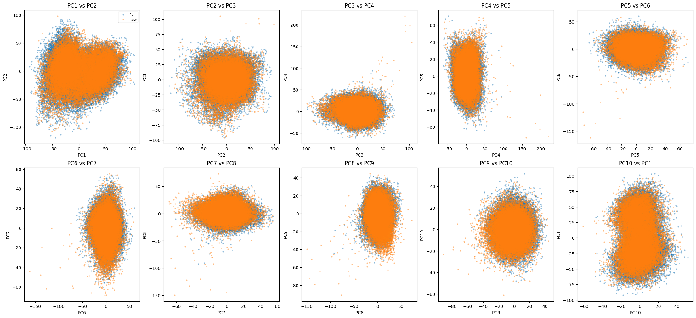
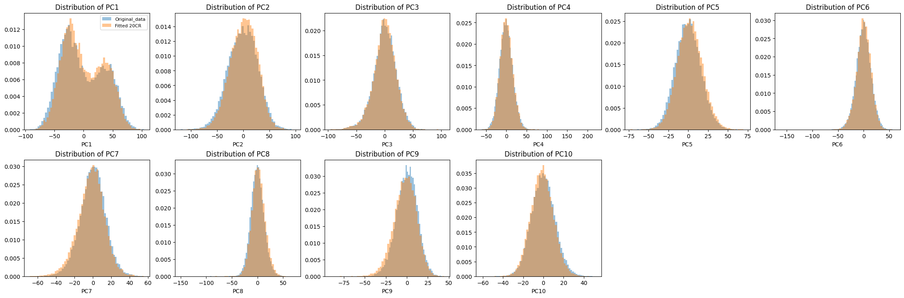
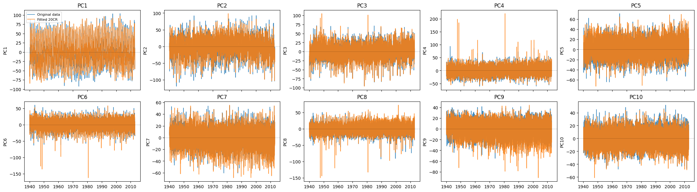
df_pcs.to_csv('outputs/PCA/pcs_mslp_20cr_df.csv')
df_pcs
| PC1 | PC2 | PC3 | PC4 | PC5 | PC6 | PC7 | PC8 | PC9 | PC10 | ... | PC413 | PC414 | PC415 | PC416 | PC417 | PC418 | PC419 | PC420 | PC421 | PC422 | |
|---|---|---|---|---|---|---|---|---|---|---|---|---|---|---|---|---|---|---|---|---|---|
| 1871-01-01 | -0.086007 | -0.234905 | -0.183891 | 0.118256 | -0.307796 | 0.629457 | -0.260849 | -0.348632 | -0.315842 | -0.386926 | ... | -0.399517 | -0.006635 | -0.043550 | 0.027324 | 0.186573 | 0.074457 | 0.021749 | -0.106527 | 0.085744 | -0.341209 |
| 1871-01-02 | -0.187273 | -0.618195 | -0.469747 | 0.505611 | -0.959331 | 1.398849 | -0.707023 | -0.849267 | -0.867767 | -0.870079 | ... | -0.043545 | -0.199837 | 0.003420 | -0.023368 | 0.050978 | 0.022223 | -0.117842 | -0.236173 | -0.004014 | -0.134645 |
| 1871-01-03 | -0.171758 | -2.394401 | -0.311508 | 1.524742 | -2.522201 | 2.343110 | -1.141847 | -2.595708 | -2.169162 | 0.049443 | ... | -0.635301 | -0.317808 | -0.595697 | 0.044560 | -0.121341 | -0.211656 | -0.097481 | 0.455737 | 0.462362 | -0.026479 |
| 1871-01-04 | 0.260252 | -7.954070 | 1.481841 | 4.327903 | -7.002630 | 4.265431 | -1.930586 | -7.968569 | -5.875587 | 4.224694 | ... | -0.325275 | 0.659490 | 0.809547 | 0.109262 | 0.286208 | -0.067150 | -0.315534 | -0.279543 | -0.457101 | -0.308599 |
| 1871-01-05 | 1.236674 | -14.232229 | 6.509466 | 6.962477 | -11.092649 | 3.279446 | -1.090120 | -12.042172 | -8.256926 | 11.648436 | ... | 0.681365 | -0.732861 | -0.776753 | -0.600548 | -0.804398 | -0.543199 | 0.908270 | -0.782035 | -0.176883 | 1.274076 |
| ... | ... | ... | ... | ... | ... | ... | ... | ... | ... | ... | ... | ... | ... | ... | ... | ... | ... | ... | ... | ... | ... |
| 2012-12-27 | -38.098217 | -37.896233 | -3.336508 | 20.707542 | 10.143505 | -28.806820 | 8.862761 | 6.083100 | 7.229842 | -0.616333 | ... | -0.883700 | 1.092116 | 0.116902 | -0.554848 | -0.473234 | 0.401672 | 0.867787 | -0.561231 | 0.165229 | 0.816046 |
| 2012-12-28 | -38.034496 | -37.159588 | 0.823626 | 13.752421 | 18.138474 | -22.842779 | 8.771376 | 0.823844 | -0.920200 | -4.074412 | ... | -0.606757 | 0.397072 | 0.402052 | -1.057688 | -0.026332 | -1.276077 | 0.076237 | 1.061264 | 0.243030 | 0.103405 |
| 2012-12-29 | -39.570129 | -31.259415 | 6.228447 | 3.368056 | 20.232248 | -18.508675 | 15.085519 | -9.750986 | -5.175528 | -3.536433 | ... | 0.420102 | 0.136498 | -1.097524 | 0.818038 | -0.521606 | -0.572169 | 0.821383 | -0.641850 | -0.838163 | -0.007653 |
| 2012-12-30 | -42.566967 | -25.001511 | 9.830803 | -4.278940 | 12.152595 | -12.435157 | 11.874052 | -13.444093 | -11.801994 | -10.414918 | ... | 0.364739 | -1.250391 | 0.767592 | -0.377003 | -1.007587 | 0.548471 | 0.415854 | 1.763512 | 0.682911 | 0.406491 |
| 2012-12-31 | -45.583515 | -19.005198 | 7.112015 | -4.832949 | 3.298781 | -8.010551 | 3.070305 | -11.593654 | -12.551609 | -17.600601 | ... | -0.459652 | -0.769408 | -0.508048 | 0.628887 | -0.202640 | 1.332126 | -1.049246 | -1.581152 | 0.202533 | -2.706934 |
51865 rows × 422 columns
from utils.Pcs_plots import plot_pc_pair_scatters
from utils.Pcs_plots import plot_pc_histograms
from utils.Pcs_plots import plot_pc_time_series
# Replace unrealistically large synthetic values with the original fitted PCs.
df_ref = pca_mslp_fit.pcs_df.copy()
df_ref.index = pd.to_datetime(df_ref.index)
df_pcs_clean = df_pcs.copy()
df_pcs_clean.index = pd.to_datetime(df_pcs_clean.index)
pc_cols = sorted([c for c in df_ref.columns.intersection(df_pcs_clean.columns) if c.startswith("PC")], key=lambda x: int(x[2:]))
for col in pc_cols:
ref_col = df_ref[col].dropna()
new_col = df_pcs_clean[col]
# Hard range filter over ALL 20CR timestamps (not only overlap period).
ref_min = ref_col.min()
ref_max = ref_col.max()
extreme_mask = (new_col < ref_min) | (new_col > ref_max)
# Clip to original range when outside bounds.
n_replaced = int(extreme_mask.sum())
df_pcs_clean[col] = new_col.clip(lower=ref_min, upper=ref_max)
print(f"{col}: clipped {n_replaced} out-of-range values (range=[{ref_min:.2f}, {ref_max:.2f}])")
# Named output for downstream steps.
pcs_20cr_corrected = df_pcs_clean.copy()
plot_pc_pair_scatters(
pca_fit=pca_mslp_fit,
df_new=df_pcs_clean,
pairs=[(1, 2), (2, 3), (3, 4), (4, 5), (5, 6), (6, 7), (7, 8), (8, 9), (9, 10), (10, 1)],
npcs=10,
labels=("fit", "new (cleaned)"),
)
plot_pc_histograms(
pca_fit=pca_mslp_fit,
df_new=df_pcs_clean,
npcs=10,
ncols=6,
bins=60,
labels=("Original_data", "Fitted 20CR (cleaned)"),
)
plot_pc_time_series(
pca_fit=pca_mslp_fit,
df_new=df_pcs_clean,
npcs=10,
ncols=5,
nrows=2,
figsize=(22, 6),
labels=("Original data", "Fitted 20CR (cleaned)"),
)
pcs_20cr_corrected.to_csv('outputs/PCA/pcs_mslp_20cr_df_corrected.csv')